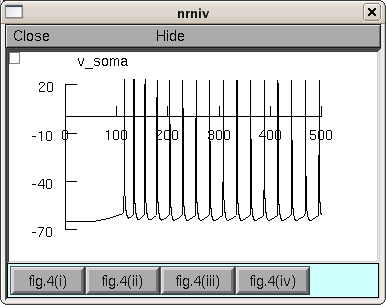

NEURON mod files from the paper: Shah MM, Migliore M, Valencia I, Cooper EC, Brown DA (2008) Functional significance of axonal Kv7 channels in hippocampal pyramidal neurons. Proc Natl Acad Sci U S A 105(22):7869-7874 In this paper, the model confirmed the experimental findings suggesting that axonal Kv7 channels are critically and uniquely required for determining the inherent spontaneous firing of hippocampal CA1 pyramids, independently of alterations in synaptic activity. This action was primarily due to modulation of action potential threshold and membrane potential (RMP), amplified by control of intrinsic axosomatic membrane properties. The model predicts that the axonal Kv7 density could be 3-5 times that at the soma. The fig4a.hoc reproduces the traces shown in Fig.4a of the paper. Under linux/unix systems: to compile the mod files use the command nrnivmodl and run the simulation hoc file with the command nrngui fig4a.hoc Under Windows systems: to compile the mod files use the "mknrndll" command. A double click on the simulation file fig4a.hoc will open the simulation window. Under MAC OS X: to compile the mod files drag and drop the extracted folder onto the mknrndll icon. Drag and drop the mosinit.hoc file onto the nrngui icon. Once the model is running you can click on a button, for example, fig. 4(ii) leads to:  Questions on how to use this model should be directed to michele.migliore@pa.ibf.cnr.it